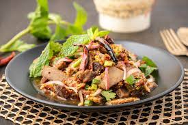

Nam Tok Moo

What is Nam Tok Moo?
This simple salad is everything you love about Thai food: spicy,
with fresh herbs and tangy lime juice, combined with juicy pork fillet steaks.
Fresh mint is an essential ingredient in this refreshing and delicious meal that
would make a fab weeknight dinner or weekend lunch.
Ingredients
- 1 tbsp raw glutinous rice
- 1 tbsp vegetable oil
- 400g (14 oz) pork scotch steaks
- ¼ cup finely sliced Asian red shallots
- ½ cup mint leaves
- 3 tbsp finely sliced sawtooth coriander (optional)
- ¼ cup sliced spring onion (scallions)
- small wedge of cabbage, snake beans and extra herbs to serve
Directions
- Toast the rice in a dry frying pan over high heat until golden brown. Remove from heat and use a mortar and pestle or a spice grinder to grind rice to a fine powder. Set aside.
- Use a meat mallet or rolling pin to lightly pound the pork steaks to about 1cm thick.
- Combine marinade ingredients, using the back of a spoon to smoosh the palm sugar to allow it to dissolve. Add the pork steaks and toss to coat. Set aside to marinate for 10 minutes.
- Heat oil in a large frying pan over medium-high heat and cook pork 3-4 minutes each side or until just cooked. Remove from heat and allow to rest before cutting into thin slices. Reserve any resting juices.
- While the pork is resting, make the dressing. Combine the fish sauce and palm sugar in a bowl and use the back of a spoon to smoosh the palm sugar to allow it to dissolve. Add the chilli flakes, lime juice and toasted rice powder.
- In a large bowl, combine the warm pork slices with the sliced shallots. Add the dressing and toss until well combined. Then add the mint, coriander and spring onion and lightly toss. Transfer to a serving plate with cabbage, snake beans and mint.
Home